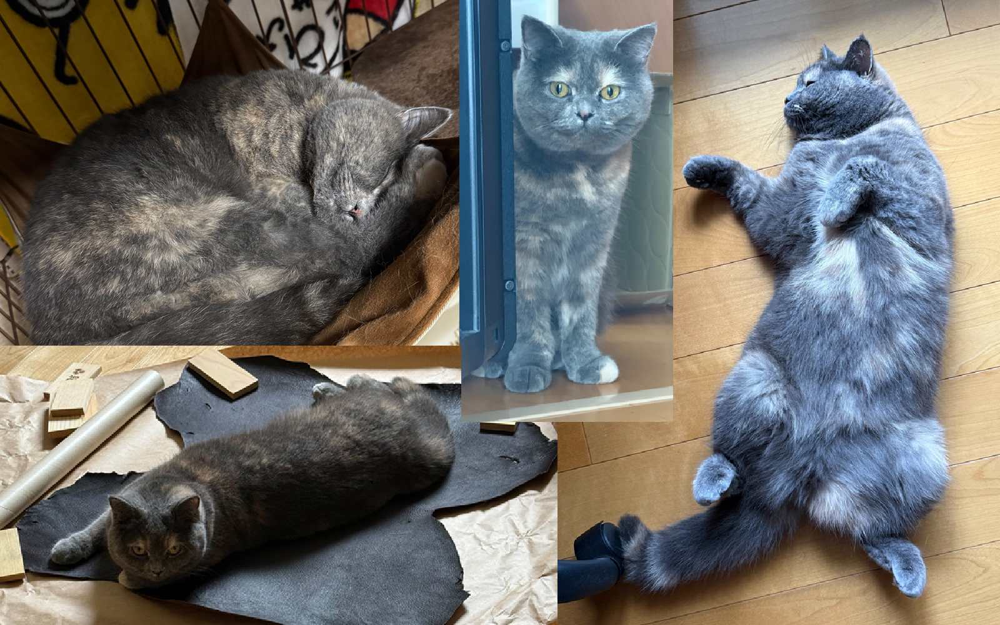
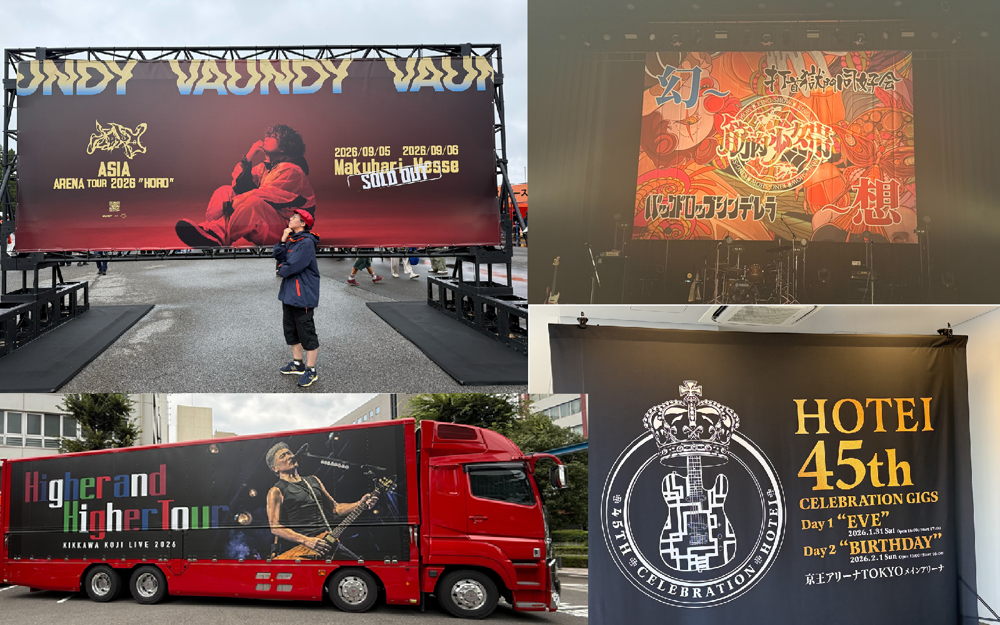
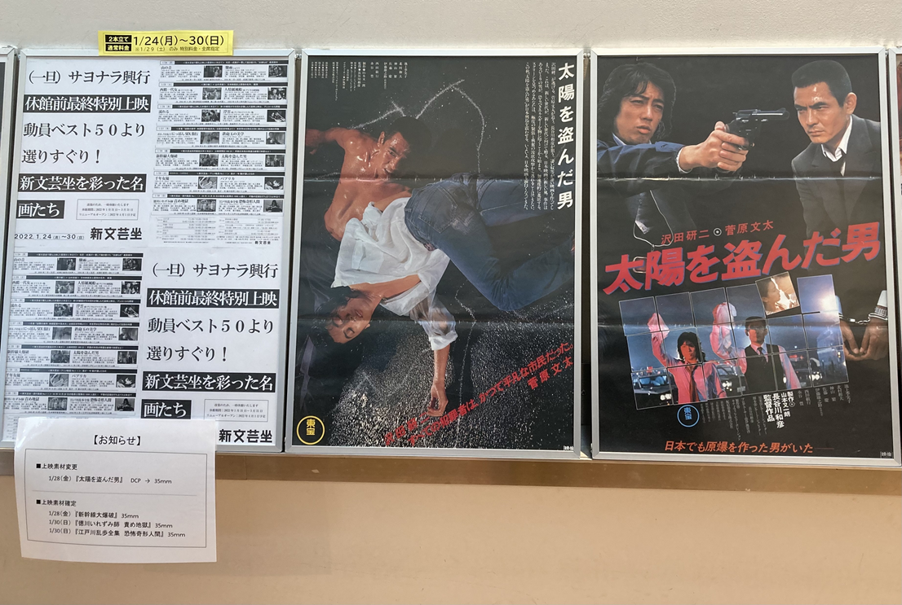
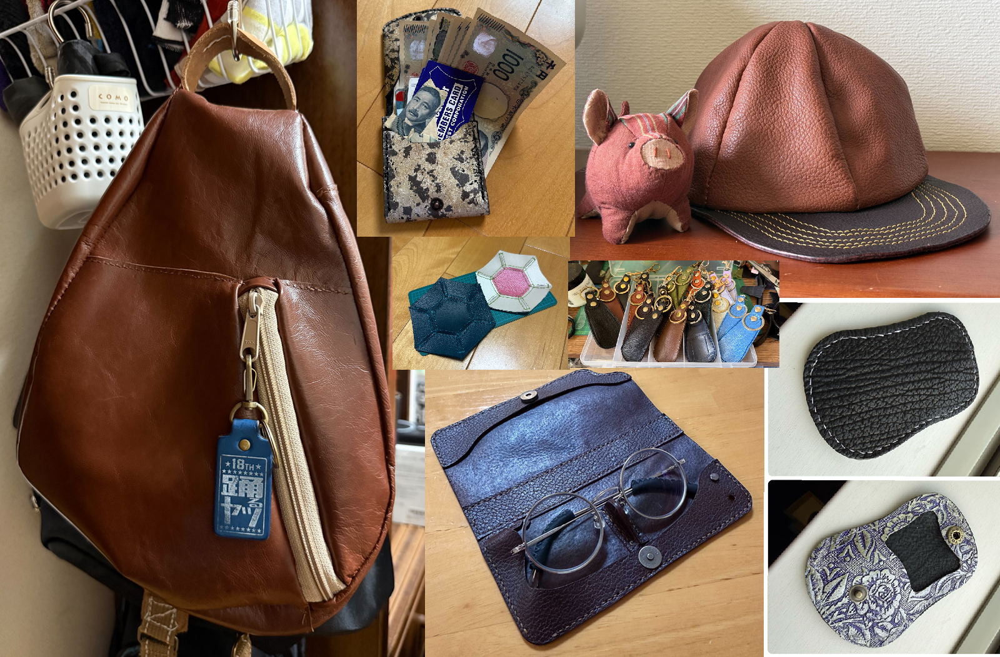

猫の空(くう)♀ 2023年10月生まれ 母が突然猫を飼うと言い出し、ペットショップからやってきた。 猪の革を広げた時、寝そべっていて野生を感じた笑

2013年4月、Shibuya AXで行われた布袋寅泰のライブが人生初だった。 吉川晃司も追いかけている。筋肉少女帯も見に行く。 若手枠はVaundy。自分軸がはっきりしていて才能に溢れているところが良い。 インディーズのバックドロップシンデレラや打首獄門同好会、その周辺のバンドも好き。 本ポートフォリオのメインテーマは「救済の技法」。平沢進の世界観が好き。

フリーター時代から、池袋でよく映画を観ていた。 それも、古い映画をたくさん。 一番好きな映画は「太陽を盗んだ男」、次点が「狂った野獣」。 菅原文太と渡瀬恒彦が好きですというと大体年齢詐称を疑われがち… 定期券を失ってからすっかり足が遠のいてしまった。

休職して半年が経った頃、ようやく自分から何かをしようと思えた時に開始。 先に始めていた友人に端切れを貰って小物をつくるなど。 ライブで再会できた人に渡すために靴べらを20本作ったりした。 今は生活基盤の安定が最優先のため、一時的に制作を停止中。早く再開したい!!